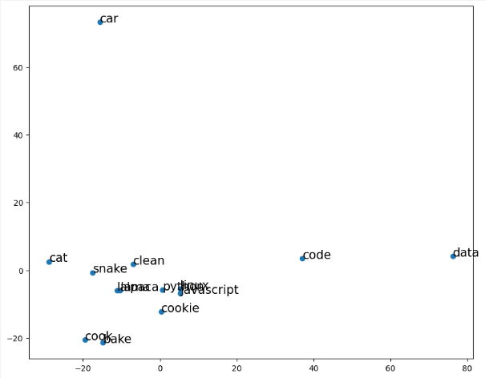

Module 2: Vector Representations
Module Overview
In this module, we'll explore vector representations of text data, a crucial step in making text processable by machine learning algorithms. We'll learn how to convert documents into numerical vectors, measure similarity between documents, and apply word embedding models to capture semantic relationships between words. These techniques form the foundation for document retrieval, recommendation systems, and more advanced NLP applications.
Learning Objectives
- Represent a document as a vector
- Query documents by similarity
- Apply word embedding models
Objective 01 - Represent a Document as Vector
Overview
We focused on one of the first steps in many natural language projects in the previous module, tokenizing our raw text. This step often includes other processing like removing stop words and finding the stems or lemmas. When we have our text broken down into tokens, we can do a more quantitative analysis, such as word counts and ranking the text by the most common words.
But there is only so much we can do with tokenized text. Machine learning algorithms don't accept text or tokens as input, so we need additional ways to represent numbers. In this module, we're going to focus on how to vectorize text. There are a few ways to do this; we'll go over some main methods here and the advantages and disadvantages of each.
Text Vectorization
In linear algebra, a vector is a single column (or row) that contains a number of elements. When we want to represent text as a vector, we are trying to illustrate the importance of the words in the document numerically or in a meaningful way.
A simple example is a binary bit vector, where a '1' means the word is present. For example, if we had two sentences, “It is very hot today and will be hot tomorrow.” and “The snow is very light and very cold.”, the binary representation could be something like:
| it | is | be | and | the | very | will | hot | today | snow | light | tomorrow | |
|---|---|---|---|---|---|---|---|---|---|---|---|---|
| Sentence 1 | 1 | 1 | 1 | 1 | 0 | 1 | 1 | 1 | 1 | 0 | 0 | 1 |
| Sentence 2 | 0 | 1 | 0 | 1 | 1 | 1 | 0 | 0 | 0 | 1 | 1 | 0 |
We've shown this with two short example sentences, but we can see there isn't a way to represent how often a word appears in a given document. For example, the word “hot” appears twice in the first example sentence but is only recorded as being present once.
Bag-of-words
Another common way to represent text is using the bag-of-words model. Again, you disregard grammar and the order of the words, but multiplicity (multiple occurrences of a word) is recorded. When we represent a text or document as a bag-of-words, we can then use the term frequency to create a vector for the text. Next, we count each word or term in the text and construct a vector for each term.
Using the same example sentence as above, we can create different vectors with a bag-of-words model.
| it | is | be | and | the | very | will | hot | today | snow | light | tomorrow | |
|---|---|---|---|---|---|---|---|---|---|---|---|---|
| Sentence 1 | 1 | 1 | 1 | 1 | 0 | 1 | 1 | 2 | 1 | 0 | 0 | 1 |
| Sentence 2 | 0 | 1 | 0 | 1 | 1 | 2 | 0 | 0 | 0 | 1 | 1 | 0 |
Document-term Matrix
Now that we have looked at two different ways to create vectors from small text samples, we can generalize to the concept of a document-term matrix (DTM). We can represent numeric characteristics of the document by using a matrix that describes the frequency of terms that occur in a collection of documents.
The rows correspond to documents in the collection in a document-term matrix, and the columns correspond to the terms. In the examples we have used so far, the sentences would be the documents, and the words in those sentences are the terms. In the bag-of-words model, the value in the cell is the term frequency. In this module, we'll use the term frequency-inverse document frequency (tf-idf).
The tf-idf is calculated by counting how many times the term occurs in the document (term frequency) divided by the number of documents in which that word occurs. Continuing with our example sentences, the tf-idf values would be calculated as follows:
| it | is | be | and | the | very | will | hot | today | snow | light | tomorrow | |
|---|---|---|---|---|---|---|---|---|---|---|---|---|
| Sentence 1 | 1 | 0.5 | 1 | 0.5 | 0 | 0.5 | 1 | 2 | 1 | 0 | 0 | 1 |
| Sentence 2 | 0 | 0.5 | 0 | 0.5 | 1 | 1 | 0 | 0 | 0 | 1 | 1 | 0 |
Follow Along
Using an example corpus, or collection of documents, we'll implement some of the above examples in scikit-learn. First, we'll create a sample corpus with some randomly generated sentences and then look at vectorization using binary encoding (or one-hot encoding), term frequency, and tf-idf.
# Create the corpus with random sentences
corpus = ["Karma, karma, karma, karma, karma chameleon.",
"The paintbrush was angry at the color the chameleon chose to use.",
"She stomped on her fruit loops and thus became a cereal killer.",
"He hated that he loved what she hated about cereal and her chameleon."
]Frequency-count
It's relatively straightforward to create a vector for each document containing the counts for each word in that document. In addition, there is a useful scikit-learn function to convert a collection of text documents to a matrix of token or word counts.
# Frequency-count
# Import the feature_extraction module and vectorizer
from sklearn.feature_extraction.text import CountVectorizer
# Instantiate the object and count the words
vectorizer = CountVectorizer()
vectors = vectorizer.fit_transform(corpus)
# Convert to dense vectors (leave out the zeroes)
print(vectors.todense())[[0 0 0 0 0 0 1 0 0 0 0 0 0 5 0 0 0 0 0 0 0 0 0 0 0 0 0 0]
[0 0 1 1 0 0 1 1 1 0 0 0 0 0 0 0 0 0 1 0 0 0 3 0 1 1 1 0]
[0 1 0 0 1 1 0 0 0 1 0 0 1 0 1 1 0 1 0 1 1 0 0 1 0 0 0 0]
[1 1 0 0 0 1 1 0 0 0 2 2 1 0 0 0 1 0 0 1 0 1 0 0 0 0 0 1]]Each vector is the length of the words in the corpus with an integer count for how often each word appears in the document. For the first document (sentence), we only have two words, and so there are only two non-zero integers. The word “karma” appears five times and so for that column, there is a 5 for the first document and zero for the other documents.
One-hot Encoding
To binary encode our text, which we call one-hot encoding, we first have to count the words to put
those values into the Binarizer. The Binarizer, by default, will convert
all values above a zero to
1 and all other values to 0.
# One-hot encoding of word counts
# Import the binary encoder
from sklearn.preprocessing import Binarizer
# Initialize the vectorizer and get the word counts
freq = CountVectorizer()
corpus_freq = freq.fit_transform(corpus)
# Initialize the binarizer and create the binary encoded vector
onehot = Binarizer()
corpus_onehot = onehot.fit_transform(corpus_freq.toarray())
# Display the one-hot encoded vector
corpus_onehotarray([[0, 0, 0, 0, 0, 0, 1, 0, 0, 0, 0, 0, 0, 1, 0, 0, 0, 0, 0, 0, 0, 0,
0, 0, 0, 0, 0, 0],
[0, 0, 1, 1, 0, 0, 1, 1, 1, 0, 0, 0, 0, 0, 0, 0, 0, 0, 1, 0, 0, 0,
1, 0, 1, 1, 1, 0],
[0, 1, 0, 0, 1, 1, 0, 0, 0, 1, 0, 0, 1, 0, 1, 1, 0, 1, 0, 1, 1, 0,
0, 1, 0, 0, 0, 0],
[1, 1, 0, 0, 0, 1, 1, 0, 0, 0, 1, 1, 1, 0, 0, 0, 1, 0, 0, 1, 0, 1,
0, 0, 0, 0, 0, 1]])The one-hot encoded vector for each document in the corpus now contains a 1 if that word is present in the document and a 0; otherwise, there is no longer any information about how frequently the words appear in each document, just if they are present.
Term frequency-inverse document frequency
In the scikit-learn feature extraction module, there is a tf-idf vectorizer function. Because stop words occur so frequently, we'll remove them before calculating the tf-idf terms.
# Import libraries and modules
import pandas as pd
from sklearn.feature_extraction.text import TfidfVectorizer
# Instantiate vectorizer object
tfidf = TfidfVectorizer(stop_words='english', max_features=5000)
# Create a vocabulary and get word counts per document
dtm = tfidf.fit_transform(corpus)
# Get feature names to use as dataframe column headers
dtm = pd.DataFrame(dtm.todense(), columns=tfidf.get_feature_names())
# View feature matrix as DataFrame
dtm.head()| angry | cereal | chameleon | chose | color | fruit | hated | karma | killer | loops | loved | paintbrush | stomped | use | |
|---|---|---|---|---|---|---|---|---|---|---|---|---|---|---|
| 0 | 0.000000 | 0.000000 | 0.126630 | 0.000000 | 0.000000 | 0.000000 | 0.00000 | 0.99195 | 0.000000 | 0.000000 | 0.000000 | 0.000000 | 0.000000 | 0.000000 |
| 1 | 0.430037 | 0.000000 | 0.274487 | 0.430037 | 0.430037 | 0.000000 | 0.00000 | 0.00000 | 0.000000 | 0.000000 | 0.000000 | 0.430037 | 0.000000 | 0.430037 |
| 2 | 0.000000 | 0.366739 | 0.000000 | 0.000000 | 0.000000 | 0.465162 | 0.00000 | 0.00000 | 0.465162 | 0.465162 | 0.000000 | 0.000000 | 0.465162 | 0.000000 |
| 3 | 0.000000 | 0.321093 | 0.259952 | 0.000000 | 0.000000 | 0.000000 | 0.81453 | 0.00000 | 0.000000 | 0.000000 | 0.407265 | 0.000000 | 0.000000 | 0.000000 |
Challenge
For this challenge, try creating a corpus or collection of sentences. You can adjust randomly generated sentences to include common words in some or all of your sentences. With this corpus, create a count vector, a one-hot encoded vector, and a tf-idf vector. Do the values make sense for each document?
Additional Resources
Objective 02 - Query Documents by Similarity
Overview
In the first objective in this module, we learned how to create vectors from the text. But now, what do we do with the vectors? It turns out that we can do much more valuable things in natural language processing and beyond when we have our information represented in numeric form. But, of course, text vectors are just vectors, and so the usual mathematical operations apply. So, we'll first review a little bit of linear algebra and then look at some examples with actual text vectors.
Vector Spaces
A vector space is the number of dimensions in the space. For example, text vectors have dimensions equal to the number of distinct words in the corpus. For a small corpus, such as a few sentences, this isn't a very high dimensional space. However, when we look at longer documents and larger corpora, the dimensions are much larger! But, it's difficult for humans to interpret areas bigger than three dimensions. So, to make these examples easier to follow, we'll consider two-dimensional spaces because they are easy to show on the screen.
Remember that the math is the same for two-dimensional spaces to the hundred-dimensional spaces we'll work with in projects in this unit.
Cosine Similarity
We often want to compare documents to each other. We start by converting a document to a vector, and then we compare the vectors. The next question is: when are two vectors similar? Using linear algebra concepts, we could say they are similar if they have the same length and direction. Remember that length is the number of unique words in the corpus, which isn't necessarily helpful when comparing documents. Next, we need to compare the other properties of the vectors. Comparing is where the concept of cosine similarity is useful.
If we want to know the similarity of two vectors, we can calculate the cosine similarity—the more similar the vectors, the smaller the angle between them. The cosine similarity is given by
This term can also be considered the normalized dot product. The normalized dot product is where the dot product of the vectors A and B are divided by their lengths. So it's a measure of how much the vectors point in the same direction.
Follow Along
Now that we have a better understanding of how to mathematically calculate the cosine similarity between two vectors let's do this with some actual text.
We'll create a corpus and then calculate the tf-idf vectors. Finally, you can calculate the cosine similarity with the scikit-learn cosine_similarity function from the sklearn.metrics.pairwise module.
# Create the corpus (text is available in a github repo)
# Import module, open and read file
from urllib.request import urlopen
# The text consists of three documents on three different subjects
link = 'https://raw.githubusercontent.com/nwhoffman/NLP_example_text/master/u4s1m2_similarity.txt'
f = urlopen(link)
myfile = f.read()
mystring = str(myfile, 'utf-8')
corpus = mystring.split(';')
# Print out the first 300 characters for each document
for i in [0, 1, 2]:
print('Document:', i)
print(corpus[i][0:300])Document: 0
The gravitational forces exerted by the Moon at several points on Earth are illustrated in Figure 4.16. These forces differ slightly from one another because Earth is not a point, but has a certain size: all parts are not equally distant from the Moon, nor are they all in exactly the same direction
Document: 1
A cell is the smallest unit of a living thing. Whether comprised of one cell (like bacteria) or many cells (like a human), we call it an organism. Thus, cells are the basic building blocks of all organisms. Several cells of one kind that interconnect with each other and perform a shared function fo
Document: 2
What do aching feet, a falling apple, and the orbit of the Moon have in common? Each is caused by the gravitational force. Our feet are strained by supporting our weight—the force of Earth's gravity on us. An apple falls from a tree because of the same force acting a few meters above Earth's surfac
# Create the vectors for each document
from sklearn.feature_extraction.text import TfidfVectorizer
# Instantiate vectorizer object
tfidf = TfidfVectorizer(stop_words='english', max_features=5000)
# Create a vocabulary and get tfidf values per document
dtm = tfidf.fit_transform(corpus)
# Imports
import pandas as pd
# Get feature names to use as DataFrame column headers
dtm = pd.DataFrame(dtm.todense(), columns=tfidf.get_feature_names())
# View the feature matrix as a DataFrame
dtm.head()
| able | aching | acting | acts | animal | apple | attracted | attraction | bacteria | ... | types | underlying | understood | unit | universe | valid | vary | ways | weakest | weight | |
|---|---|---|---|---|---|---|---|---|---|---|---|---|---|---|---|---|---|---|---|---|
| 0 | 0.082019 | 0.000000 | 0.000000 | 0.000000 | 0.000000 | 0.000000 | 0.000000 | 0.164038 | 0.082019 | ... | 0.000000 | 0.000000 | 0.000000 | 0.000000 | 0.000000 | 0.000000 | 0.000000 | 0.000000 | 0.000000 | 0.000000 |
| 1 | 0.000000 | 0.000000 | 0.000000 | 0.000000 | 0.000000 | 0.071219 | 0.000000 | 0.000000 | 0.000000 | ... | 0.071219 | 0.000000 | 0.000000 | 0.071219 | 0.000000 | 0.000000 | 0.000000 | 0.000000 | 0.000000 | 0.000000 |
| 2 | 0.000000 | 0.088592 | 0.088592 | 0.088592 | 0.088592 | 0.000000 | 0.177185 | 0.000000 | 0.000000 | ... | 0.000000 | 0.088592 | 0.088592 | 0.000000 | 0.088592 | 0.088592 | 0.088592 | 0.088592 | 0.088592 | 0.088592 |
3 rows × 147 columns
# Find the cosine similarity of tf-idf vectors
from sklearn.metrics.pairwise import cosine_similarity
cosine_sim = cosine_similarity(dtm)
# Turn it into a DataFrame
cosine_sim = pd.DataFrame(cosine_sim)
display(cosine_sim)| 0 | 1 | 2 | |
|---|---|---|---|
| 0 | 1.000000 | 0.000000 | 0.197532 |
| 1 | 0.000000 | 1.000000 | 0.007299 |
| 2 | 0.197532 | 0.007299 | 1.000000 |
With the above matrix (DataFrame), we can see that each row is the similarity of the document to itself (1.00) and the other two documents. The three documents were excerpts from textbooks: document 0 was on astronomy, document 1 was about biology, and document 2 was physics. The astronomy and physics documents were more similar than the biology document; this makes sense considering there is a lot of overlap in content between physics and astronomy for some topics.
Challenge
Try the same exercise as above but use your text. You can copy something you have written, find excerpts from your favorite books, or copy something from a news site. Create a text file and read it in as a list of three strings (documents). Calculate the tf-idf vector for each document and then compute the cosine similarity. Did you choose documents that were very different or very similar or somewhere in between?
Additional Resources
Objective 03 - Apply Word Embedding Models to Create Document Vectors
Overview
So far in this module, we have covered how to create document vectors and then examined how to determine the similarity between those document vectors. But we can do more with numeric representations of the text so that we don't lose information or allow for different types of analysis. So in this last part of the module, we will focus on word embeddings or word vectors.
First, why do we need another vector representation of text? The bag-of-words model we used previously contains no content for individual words. So we limit our options or even model accuracy if we throw away some of the meaning or context.
Word Embedding
The concept of word embedding is related to the mathematical concept of embedding, where a word is represented as a continuous vector in a space with a much lower dimension. Words or phrases (all of the unique words in the corpus) are mapped to vectors in real space. Each word is mapped to a single vector that is learned by applying neural network techniques. Thus, words that are in the same contexts will have similar meanings and similar word vectors.
There are a few different ways to generate word vectors. First, we'll present a brief overview of the popular word2vec tool and then look at the word vectors available in spaCy, generated from the GloVe algorithm.
Word2vec
Word embeddings, in general, are found by processing a large corpus of text to learn the meanings of words. In the process, we don't want to learn the exact definition of a word but rather some representation of the meaning. We can think of word vectors as a list of weights or scores, where each vector element is a specific dimension. These dimensions represent things like the “peopleness” or “animalness” or “foodness” of a word. The combination of all of these “ness” values is the word vector.
The word2vec tool uses two algorithms to find these vectors: the skip-gram algorithm and the CBOW algorithm.
skip-gram
The skip-gram method is named because it uses n-grams that contain gaps where the token is skipped. The surrounding words are predicted based on the input word. This method for generating work vectors works well with small corpora and rare words.
CBOW
The continuous-bag-of-words or CBOW method works similarly to the skip-gram method but instead predicts the center word from the surrounding words. This model is faster to train and results in higher accuracy for words that are in use frequently.
Follow Along
We'll use the spaCy library in this example, which has a model containing pre-trained word vectors. Pre-trained word vectors are a huge time saver because training the model to generate the word vectors is time (and CPU!) consuming. In the spaCy model, the vectors are obtained using the GloVe algorithm and result from training on a huge corpus called Common Crawl.
Let's load the model and look at the word vectors for a few examples.
# Import the library and model
import spacy
nlp = spacy.load('en_core_web_lg')
# Set the document (this example contains two words)
doc = nlp("drama llama")
# Get the vectors for document
# (the vectors are the average of the two word vectors)
llama_vector = doc.vector
# Look length of the vector (how many dimensions?)
print(llama_vector.shape)
# Display part of the vector
print(llama_vector[:10])
(300,)[-0.04911 -0.23685 0.10623751 -0.19662951 -0.403395 0.238247
0.1852 -0.28211 -0.31013 1.0560249 ]The vector displayed here is the average of the word vectors “drama” and “llama.” While this vector, at least the first ten items, looks like a list of numbers, we aren't just looking at a single vector, or an average of vectors, in isolation.
In the previous module, we learned how to compare two words by comparing the cosine similarity between two-word vectors. The spaCy library has a built-in method to do this. In the following example, we'll compare the word “llama” with a few other similar and different words.
# Find the similarity score for example words
# Compare "llama" and "horse"
print("The similarity score for llama-llama is: ", nlp("llama").similarity(nlp("llama")))
print("The similarity score for llama-horse is: ", nlp("llama").similarity(nlp("horse")))
print("The similarity score for llama-car is: ", nlp("llama").similarity(nlp("car")))
The similarity score for llama-llama is: 1.0
The similarity score for llama-horse is: 0.37856930047799736
The similarity score for llama-car is: 0.08994986314497783
The similarity scores make sense: a llama is much more similar to a horse than a car. A word is always exactly similar to itself, within floating point precision errors.
We can look at a list of words and their vectors. But we have the problem of dimensionality: the word vectors are all 300-dimensional vectors. We can't plot a 300-dimensional vector space very easily (or really at all). So we can practice some of our dimensional reduction techniques and use principal component analysis (PCA) to project the two most essential components onto a 2-dimensional space.
# import the PCA module from sklearn
from sklearn.decomposition import PCA
# Define a function to find the vector for a word
def get_word_vectors(words):
# converts a list of words into their word vectors
return [nlp(word).vector for word in words]
# Example word list to find vectors for
words = ['python', 'javascript', 'code', 'data', 'linux',
'llama', 'alpaca', 'cat', 'snake',
'cook', 'bake', 'cookie', 'clean', 'car']
# Initialize the PCA model and project down to two dimensions
pca = PCA(n_components=2)
# Fit the PCA model on the word list
pca.fit(get_word_vectors(words))
# Apply the transformation learned from the PCA model
word_vecs_2d = pca.transform(get_word_vectors(words))
# Look at the 2-D array (which is just x and y coordinates)
word_vecs_2darray([[ 2.87538871, 2.1924341 ],
[ 3.89682021, -0.73923489],
[ 3.69059896, -1.41344964],
[ 2.95501969, -1.67204314],
[ 3.21524274, -0.10002494],
[-1.79493447, 4.34816682],
[-2.3407361 , 4.28495142],
[-1.45716462, 1.55856908],
[-0.84419009, 2.45805994],
[-3.56703596, -2.77326173],
[-3.87441702, -3.66247474],
[-1.3833254 , -2.81328086],
[-0.81738513, -1.28377165],
[-0.55388151, -0.38463977]])
# Imports for plotting
import matplotlib.pyplot as plt
plt.figure(figsize=(10,8))
plt.scatter(word_vecs_2d[:,0], word_vecs_2d[:,1])
# Display the text of the word at each point
for word, coord in zip(words, word_vecs_2d):
x, y = coord
plt.text(x+0.05, y, word, size= 15)
# show the plot
plt.show()

Challenge
Copy the above code using your own list of words and produce a plot. Check the similarity between
words in this plot with token1.similarity(token2). Do similar words lie next to each
other?
Additional Resources
Guided Project
Open DS_412_Vector_Representations_Lecture_GP.ipynb in the GitHub repository to follow along with the guided project.
Module Assignment
Work with job listings data for Data Scientists to practice text vectorization techniques. Create document-term matrices, implement TF-IDF vectorization, and build a nearest neighbor model to find similar job listings based on queries.
Assignment Solution Video
Additional Resources
Vector Representations and Embeddings
- Scikit-Learn: Text Feature Extraction
- Gensim: Word2Vec Tutorial
- Stanford NLP: GloVe - Global Vectors for Word Representation
Document Similarity and Retrieval
- Vector Semantics and Embeddings - Chapter from Speech and Language Processing
- Calculating Document Similarities Using BERT and Other Models